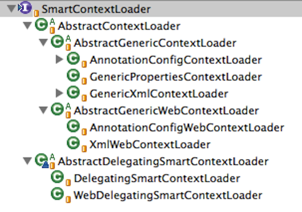
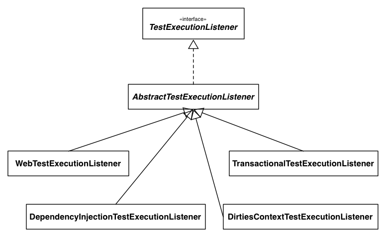

Testing Web Apps with
Spring Framework 3.2
Sam Brannen
Swiftmind
Rossen Stoyanchev
VMware
Sam Brannen
@sam_brannen
- Spring and Java Consultant @ Swiftmind
- Developing Java for over 14 years
- Spring Framework Core Committer
- Spring Trainer
- Lead author of Spring in a Nutshell
- Presenter on Spring, Java, and testing
Rossen Stoyanchev
@rstoya05
- Staff Engineer, VMware
- Spring Framework Commiter
- Focus on Web development
- Spring MVC, Spring Web Flow
- Teaching and consulting
Themes
- New testing features in the Spring Framework
- Spring MVC Test (
spring-test-mvc)
Agenda
- Spring TestContext Framework
- Web Application Contexts
- Context Initializers
- Context Hierarchies
- Spring MVC Test Framework
- Server-side Spring MVC Tests
- Client-side
RestTemplateTests - Q&A
Show of Hands...
- JUnit / TestNG
- Spring 2.5 / 3.0 / 3.1 / 3.2
- Integration testing with Spring
- Spring TestContext Framework
- Spring MVC / Test
Spring TestContext Framework
- Introduced in Spring 2.5
- Revised in Spring 3.2 ...
- with a focus on web apps
- Unit and integration testing
- Annotation-driven
- Convention over Configuration
- JUnit & TestNG
Spring & Integration Testing
ApplicationContextmanagement & caching- Dependency injection of test instances
- Transactional test management
- with default rollback semantics
JdbcTestUtils(-SimpleJdbcTestUtils-)
Spring Test Annotations
- Application Contexts
@ContextConfiguration,@DirtiesContext
- Dependency Injection
@Autowired
- Transactions
@Transactional,@TransactionConfiguration,@BeforeTransaction
- Web
@WebAppConfiguration
Using the TestContext Framework
- Use the
SpringJUnit4ClassRunnerfor JUnit 4.5+ - Instrument test class with
TestContextManagerfor TestNG - Extend one of the base classes
Abstract(Transactional)[JUnit4|TestNG]SpringContextTests
Example: @POJO Test Class
public class OrderServiceTests {
@Test
public void testOrderService() { … }
}Example: @POJO Test Class
@RunWith(SpringJUnit4ClassRunner.class)
public class OrderServiceTests {
@Test
public void testOrderService() { … }
}Example: @POJO Test Class
@RunWith(SpringJUnit4ClassRunner.class)
@ContextConfiguration
public class OrderServiceTests {
@Test
public void testOrderService() { … }
}Example: @POJO Test Class
@RunWith(SpringJUnit4ClassRunner.class)
@ContextConfiguration // defaults to
// OrderServiceTests-context.xml in same package
public class OrderServiceTests {
@Test
public void testOrderService() { … }
}Example: @POJO Test Class
@RunWith(SpringJUnit4ClassRunner.class)
@ContextConfiguration // defaults to
// OrderServiceTests-context.xml in same package
public class OrderServiceTests {
@Autowired
private OrderService orderService;
@Test
public void testOrderService() { … }
}Example: @POJO Test Class
@RunWith(SpringJUnit4ClassRunner.class)
@ContextConfiguration // defaults to
// OrderServiceTests-context.xml in same package
@Transactional
public class OrderServiceTests {
@Autowired
private OrderService orderService;
@Test
public void testOrderService() { … }
}Example: @POJO Test Class
@RunWith(SpringJUnit4ClassRunner.class)
@ContextConfiguration // defaults to
// OrderServiceTests-context.xml in same package
@Transactional
public class OrderServiceTests {
@Autowired
private OrderService orderService;
@BeforeTransaction
public void verifyInitialDatabaseState() { … }
@Test
public void testOrderService() { … }
}Example: @POJO Test Class
@RunWith(SpringJUnit4ClassRunner.class)
@ContextConfiguration // defaults to
// OrderServiceTests-context.xml in same package
@Transactional
public class OrderServiceTests {
@Autowired
private OrderService orderService;
@BeforeTransaction
public void verifyInitialDatabaseState() { … }
@Before
public void setUpTestDataWithinTransaction() { … }
@Test
public void testOrderService() { … }
}Core Components
TestContext
- Tracks context for current test
- Delegates to a
ContextLoader - Caches the
ApplicationContext
TestContextManager
- Manages the
TestContext - Signals events to listeners
TestExecutionListener SPI
- Reacts to test execution events
- Receives reference to current
TestContext
TestExecutionListener 2.5

SmartContextLoader SPI
- Strategy for loading application contexts
- From
@Configurationclasses or resource locations - Supports environment profiles and context initializers
ContextLoader 3.1

Putting it all together

What's New in 3.2
- Upgraded to JUnit 4.10
and TestNG 6.5.2
spring-testnow depends onjunit:junit-dep
- Now inferring return type of
generic factory methods
- Updated Spring mocks
- Simplified transaction manager configuration
- Improved JDBC integration
testing support
- Documented support for...
@Beanlite mode
- and
- JSR-250 lifecycle annotations
- Now supporting...
WebApplicationContext
- session & request scoped beans
- and
ApplicationContextInitializer
- Planned support for...
- context hierarchies
Generic Factory Methods
- Not specific to testing
- Sometimes used for creating a proxy
- But often used for mocking Spring beans
Example: Mocking with EasyMock
<beans ...>
<!-- OrderService is autowired with OrderRepository -->
<context:component-scan base-package="com.example"/>
<bean id="orderRepository" class="org.easymock.EasyMock"
factory-method="createMock"
c:_="com.example.repository.OrderRepository" />
</beans>EasyMock.createMock() Signature
public static <T> T createMock(Class<T> toMock) {...}Generic Factory Methods - Improved
- Generic return types are now inferred
public static <T> T mock(Class<T> clazz)public static <T> T proxy(T obj)
- Autowiring by type now works
- And custom solutions are now chiefly unnecessary:
MockitoFactoryBeanEasyMockFactoryBean- Springockito
Spring Environment Mocks
- introduced
MockEnvironmentin 3.2 - complements
MockPropertySourcefrom 3.1
New Spring HTTP Mocks
- Client:
MockClientHttpRequestMockClientHttpResponse
- Server:
MockHttpInputMessageMockHttpOutputMessage
Enhanced Servlet API Mocks
MockServletContextMockHttpSessionMockFilterChainMockRequestDispatcher- ...
Transaction Manager Config
- support for single, unqualified transaction manager
- support for
TransactionManagementConfigurer @TransactionConfigurationis now rarely necessary
JDBC Testing Support
- deprecated
SimpleJdbcTestUtilsin favor ofJdbcTestUtils - introduced
countRowsInTableWhere()anddropTables()inJdbcTestUtils - introduced
jdbcTemplate,countRowsInTableWhere(), anddropTables()inAbstractTransactionalJUnit4SpringContextTestsAbstractTransactionalTestNGSpringContextTests
Documentation
- support for
@Beanlite mode and annotated classes - support for JSR-250 lifecycle annotations
Web Testing Support in the TestContext Framework
New Web Testing Features
- First-class
WebApplicationContextsupport RequestandSessionscoped beans
Loading a WebApplicationContext
- How do you tell the TestContext framework
to load aWebApplicationContext?
- Just annotate your test class with ...
@WebAppConfiguration
- Denotes that the
ApplicationContextshould be aWebApplicationContext - Configures the resource path for the web app
- used in the
MockServletContext
- used in the
- Defaults to
"src/main/webapp" - Paths are file-system folders, relative to the project root
- not classpath resources
- The
classpath:prefix is also supported
Example: @WebAppConfiguration
// defaults to "file:src/main/webapp"
@WebAppConfiguration
// detects "WacTests-context.xml" in same package
// or static nested @Configuration class
@ContextConfiguration
public class WacTests {
//...
}Example: @WebAppConfiguration
// file system resource
@WebAppConfiguration("webapp")
// classpath resource
@ContextConfiguration("/spring/test-servlet-config.xml")
public class WacTests {
//...
}Example: @WebAppConfiguration
// classpath resource
@WebAppConfiguration("classpath:test-web-resources")
// file system resource
@ContextConfiguration("file:src/main/webapp/WEB-INF/servlet-config.xml")
public class WacTests {
//...
}Web Context Loaders
- New
AbstractGenericWebContextLoader - And two concrete subclasses:
XmlWebContextLoaderAnnotationConfigWebContextLoader
- Plus a
WebDelegatingSmartContextLoader
SmartContextLoader 3.2

WebTestExecutionListener
- Sets up default thread-local state via
RequestContextHolderbefore each test method - Creates:
MockHttpServletRequestMockHttpServletResponseServletWebRequest
- Ensures that the
MockHttpServletResponseandServletWebRequestcan be injected into the test instance - Cleans up thread-local state after each test method
TestExecutionListener 2.5

TestExecutionListener 3.2

Example: Injecting Mocks
@WebAppConfiguration
@ContextConfiguration
public class WacTests {
@Autowired WebApplicationContext wac; // cached
@Autowired MockServletContext servletContext; // cached
@Autowired MockHttpSession session;
@Autowired MockHttpServletRequest request;
@Autowired MockHttpServletResponse response;
@Autowired ServletWebRequest webRequest;
//...
}Web Application Context Caching
WebMergedContextConfiguration
- Extension of
MergedContextConfiguration - Supports the base resource path from
@WebAppConfiguration- which is now part of the context cache key
Request and Session Scoped Beans
Web Scopes
- request: lifecycle tied to the current
HttpServletRequest - session: lifecycle tied to the current
HttpSession
Example: Request-scoped Bean Config
<beans ...>
<bean id="userService" class="com.example.SimpleUserService"
c:loginAction-ref="loginAction" />
<bean id="loginAction" class="com.example.LoginAction"
c:username="#{request.getParameter('user')}"
c:password="#{request.getParameter('pswd')}"
scope="request">
<aop:scoped-proxy />
</bean>
</beans>Example: Request-scoped Bean Test
@RunWith(SpringJUnit4ClassRunner.class)
@ContextConfiguration
@WebAppConfiguration
public class RequestScopedBeanTests {
@Autowired UserService userService;
@Autowired MockHttpServletRequest request;
@Test
public void requestScope() {
request.setParameter("user", "enigma");
request.setParameter("pswd", "$pr!ng");
LoginResults results = userService.loginUser();
// assert results
}
}Example: Session-scoped Bean Config
<beans ...>
<bean id="userService" class="com.example.SimpleUserService"
c:userPreferences-ref="userPreferences" />
<bean id="userPreferences" class="com.example.UserPreferences"
c:theme="#{session.getAttribute('theme')}"
scope="session">
<aop:scoped-proxy />
</bean>
</beans>Example: Session-scoped Bean Test
@RunWith(SpringJUnit4ClassRunner.class)
@ContextConfiguration
@WebAppConfiguration
public class SessionScopedBeanTests {
@Autowired UserService userService;
@Autowired MockHttpSession session;
@Test
public void sessionScope() throws Exception {
session.setAttribute("theme", "blue");
Results results = userService.processUserPreferences();
// assert results
}
}Application Context Initializers
ApplicationContextInitializer
- Introduced in Spring 3.1
- Used for programmatic initialization of a
ConfigurableApplicationContext - For example:
- to register property sources
- to activate profiles against the
Environment
- Configured in
web.xmlby specifyingcontextInitializerClassesviacontext-paramfor theContextLoaderListenerinit-paramfor theDispatcherServlet
Using Initializers in Tests
- Configured in
@ContextConfigurationvia theinitializersattribute - Inheritance can be controlled via the
inheritInitializersattribute - An
ApplicationContextInitializermay configure the entire context- XML resource locations or annotated classes are no longer required
- Initializers are now part of the context cache key
- Initializers are ordered based on Spring's
Orderedinterface or the@Orderannotation
Example: Single Initializer
@RunWith(SpringJUnit4ClassRunner.class)
@ContextConfiguration(
locations = "/app-config.xml",
initializers = CustomInitializer.class)
public class ApplicationContextInitializerTests {}Example: Multiple Initializers
@RunWith(SpringJUnit4ClassRunner.class)
@ContextConfiguration(
locations = "/app-config.xml",
initializers =
{PropertySourceInitializer.class, ProfileInitializer.class})
public class ApplicationContextInitializerTests {}Example: Merged Initializers
@RunWith(SpringJUnit4ClassRunner.class)
@ContextConfiguration(
classes = BaseConfig.class,
initializers = BaseInitializer.class)
public class BaseTest {}
@ContextConfiguration(
classes = ExtendedConfig.class,
initializers = ExtendedInitializer.class)
public class ExtendedTest extends BaseTest {}Example: Overridden Initializers
@RunWith(SpringJUnit4ClassRunner.class)
@ContextConfiguration(
classes = BaseConfig.class,
initializers = BaseInitializer.class)
public class BaseTest {}
@ContextConfiguration(
classes = ExtendedConfig.class,
initializers = ExtendedInitializer.class,
inheritInitializers = false)
public class ExtendedTest extends BaseTest {}Example: Initializer w/o Locations or Classes
@ContextConfiguration(initializers = EntireAppInitializer.class)
public class InitializerWithoutConfigFilesOrClassesTest {}Application Context Hierarchies
- WARNING
- Support for context hierarchies
has not yet been implemented.
Status Quo for Tests
- Currently only flat, non-hierarchical
contexts are supported.
- There is no easy way to create contexts
with parent-child relationships.
- But hierarchies are supported in production.
- So it would be nice to be able to test them. ;)
Context Hierarchy Goals
- Load a test application context with a parent context
- Support common hierarchies
- Root WAC <-- Dispatcher WAC
- EAR <-- Root WAC <-- Dispatcher WAC
Context Hierarchy Proposal
- Introduce
@ContextHierarchythat contains nested@ContextConfigurationdeclarations - Introduce a
nameattribute in@ContextConfiguration- for merging or overriding named configuration in the context hierarchy
Single Test with Context Hierarchy
@RunWith(SpringJUnit4ClassRunner.class)
@ContextHierarchy({
@ContextConfiguration("parent.xml"),
@ContextConfiguration("child.xml")
})
public class AppCtxHierarchyTests {}Root WAC & Dispatcher WAC
@RunWith(SpringJUnit4ClassRunner.class)
@WebAppConfiguration
@ContextHierarchy({
@ContextConfiguration(
name="root",
classes = WebAppConfig.class),
@ContextConfiguration(
name="dispatcher",
locations="/spring/dispatcher-config.xml")
})
public class ControllerIntegrationTests {}Class & Context Hierarchies
@RunWith(SpringJUnit4ClassRunner.class)
@WebAppConfiguration
@ContextConfiguration("file:src/main/webapp/WEB-INF/applicationContext.xml")
public abstract class AbstractWebTests {}
@ContextHierarchy(@ContextConfiguration("/spring/soap-ws-config.xml")
public class SoapWebServiceTests extends AbstractWebTests {}
@ContextHierarchy(@ContextConfiguration("/spring/rest-ws-config.xml")
public class RestWebServiceTests extends AbstractWebTests {}Intermission... ;)
Spring MVC Test Framework
Background
- Recently added to
spring-testas of Spring 3.2 RC1 - Originates from spring-test-mvc separate project on Github
- Nearly identical code bases
- spring-test-mvc will continue to support Spring 3.1
Differences with spring-test-mvc
- Dependency on Spring 3.2, not Spring 3.1
- Support for Spring 3.2 features (e.g. Servlet 3 async)
- Integration with
@WebAppConfiguration - Different packages
- Easy migration from spring-test-mvc to Spring 3.2
What does it provide?
- 1st class support for testing Spring MVC apps
- Fluent API
- Server-side tests involve the
DispatcherServlet - Client-side tests are
RestTemplate-based
Built on spring-test
TestContextframework used for loading Spring configMockHttpServletRequest/ResponseMockFilterChain- Servlet container is not used
Extent of support
- Pretty much everything should work as it does at runtime
- HTTP message conversion
e.g.@RequestBody/@ResponseBody - Most rendering technologies
JSON, XML, Freemarker/Velocity, Thymeleaf, Excel, etc
Limitations
- We are not in a servlet container
- Foward and redirect not executed
- No JSP rendering
Server-side
Spring MVC Tests
Example
@RunWith(SpringJUnit4ClassRunner.class)
@WebAppConfiguration
@ContextConfiguration("servlet-context.xml")
public class SampleTests {
}@RunWith(SpringJUnit4ClassRunner.class)
@WebAppConfiguration
@ContextConfiguration("servlet-context.xml")
public class SampleTests {
@Autowired
private WebApplicationContext wac;
private MockMvc mvc;
@Before
public void setup() {
this.mvc = webAppContextSetup(this.wac).build();
}
}@RunWith(SpringJUnit4ClassRunner.class)
@WebAppConfiguration
@ContextConfiguration("servlet-context.xml")
public class SampleTests {
@Autowired
private WebApplicationContext wac;
private MockMvc mvc;
@Before
public void setup() {
this.mvc = webAppContextSetup(this.wac).build();
}
@Test
public void getFoo() throws Exception {
this.mvc.perform(get("/foo").accept("application/json"))
.andExpect(status().isOk())
.andExpect(content().mimeType("application/json"))
.andExpect(jsonPath("$.name").value("Lee"));
}
}Static Imports
MockMvcBuilders.*,MockMvcRequestBuilders.*,MockMvcResultMatchers.*- Add as "favorite packages" in Eclipse prefs
for code completion - Or simply search
"MockMvc*"
Set-Up Options
- The goal:
MockMvcinstance ready to perform requests - Prepare
DispatcherServletconfig - Specify root of webapp
- Add servlet Filters
Option 1: TestContext framework
- Load actual
DispatcherServletconfig - Smart caching of
WebApplicationContextinstances - Possibly inject controllers with mock services
Declaring a Mock Service For Injection
<bean class="org.mockito.Mockito" factory-method="mock">
<constructor-arg value="org.example.FooService"/>
</bean>Option 2: "Standalone"
- Simply register one or more
@Controllerinstances - Config similar to MVC Java Config
- No Spring context is actually loaded
- "Stub"
WebApplicationContextused to configureDispatcherServlet
"Standalone" Setup Example
standaloneSetup(new PersonController()).build()
.mockMvc.perform(post("/persons").param("name", "Joe"))
.andExpect(status().isMovedTemporarily())
.andExpect(redirectedUrl("/persons/Joe"))
.andExpect(model().size(1))
.andExpect(model().attributeExists("name"));@WebAppConfiguration vs. "Standalone"
- "Standalone" more targetted
one controller at a time, explicit config @WebAppConfigurationverifies application config- No right or wrong choice, different test styles
- May also mix and match
Performing Requests
- Specify HTTP method and URI at a minimum
- Additional builder-style methods corresponding to
MockHttpServletRequestfields
Request Examples
mockMvc.perform(
post("/hotels/{id}?n={n}", 42, "N"));
mockMvc.perform(
fileUpload("/doc").file("a1", "ABC".getBytes("UTF-8")));Specifying Parameters
- Query string in the URI
get("/hotels?a=b") - Form params in the request body
get("/hotels").body("a=b".getBytes("ISO-8859-1")) - Servlet parameters
get("/hotels").param("a", "b")
Context/Servlet Path + PathInfo
- If you specify full path
get("/app/main/hotels/{id}") - Then set paths accordingly
get("").contextPath("/app").servletPath("/main") - Or leave out context/servlet path
get("/hotels/{id}")
Default Request Properties
- Performed requests are often similar
- Same header, parameter, cookie
- Specify default request when setting up
MockMvc - Performed requests override defaults!
Default Request Example
webAppContextSetup(this.wac).defaultRequest(get("/")
.accept(MediaType.APPLICATION_JSON)
.param("locale", "en_US"));Defining Expectations
- Simply add one or more
.andExpect(..) - After the call to
perform(..) MockMvcResultMatchersprovides many choices
What Can Be Verified
- Response status, headers, content
- But also Spring MVC specific information
- Flash attrs, handler, model content, etc
- See lots of sample tests for examples
JSON and XML Content
- JSONPath
- XPath
- XMLUnit
In Doubt?
- Print all details
mvc.perform("/foo").andDo(print()) - Or directly acccess the result
MvcResult r = mvc.perform("/foo").andReturn()
Common Expectations
- Tests often have similar expectations
- Same status, headers
- Specify such expectations when setting up
MockMvc
Common Expectations Example
webAppContextSetup(this.wac)
.andAlwaysExpect(status.isOk())
.alwaysExpect(content().mimeType("application/xml"))
.alwaysDo(print())
.build();Filters
- Filters may be added when setting up
MockMvc - Executed as requests get peformed
- Various possible use case
- See
Spring Securitysample tests
HtmlUnit Integration
- Adapts
HtmlUnitrequest-response toMockHttpServletRequest/Response - Enables use of
SeleniumandGeb Spockon top - No running server
- Give it a try, feedback welcome!
Client-side
RestTemplate Tests
Example
RestTemplate restTemplate = new RestTemplate();
MockRestServiceServer mockServer =
MockRestServiceServer.createServer(restTemplate);
mockServer.expect(requestTo("/greeting"))
.andRespond(withSuccess("Hello world", "text/plain"));
// use RestTemplate ...
mockServer.verify();Static Imports
MockRestRequestMatchers.*andMockRestResponseCreators.*- Add as "favorite packages" in Eclipse prefs
for code completion - Or simply search
"MockRest*"
RestTemplate Instrumentation
MockRestServiceServer.createServer(restTemplate)- Configures
RestTemplatewith customClientHttpRequestFactory - Can be used further to ...
- Define expected requests and responses
- Verify expectations
Define Expected Requests-Responses
mockServer.expect(..).andExpect(..)- Followed by
.andReturn(..) - Set up any number of requests with
mockServer.expect(..)
Each Time RestTemplate Is Used
- Request expectations asserted
- Stub response returned
- Exception raised if no more expected requests
After RestTemplate Is Used
mockServer.verify(..)- Ensures all expected requests executed
In Closing ...
Presentation Source
https://github.com/rstoyanchev/spring-32-test-webapps
Resources for Spring MVC Test
- Spring MVC Showcase tests
- Sample client and server tests in the Spring Framework
- Reference documentation will be added in 3.2 RC2
Resources for Core Spring
- Spring Framework:
www.springsource.org/spring-framework - Reference Manual: Spring 3.2.x
- Forums: forum.springframework.org
- JIRA: jira.springsource.org